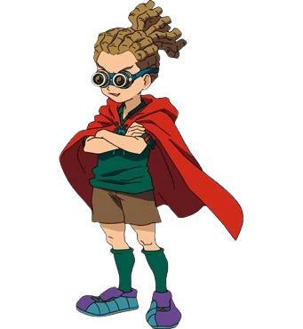

JUDE SHARP
{% for item in statistiche_10 %}
Squadra: {{ item[0] }}
Posizione: {{ item[1] }}
Elemento: {{ item[2] }}
Tiro: {{ item[3] }}
Fisico: {{ item[4] }}
Controllo: {{ item[5] }}
Difesa: {{ item[6] }}
Velocità: {{ item[7] }}
Stamina: {{ item[8] }}
Determinazione: {{ item[9] }}
Prima mossa: {{ item[10] }}
Seconda mossa: {{ item[11] }}
Terza mossa: {{ item[12] }}
Quarta mossa:{{ item[13] }}
{% endfor %}
BIOGRAFIA
Jude Sharp (鬼道有人 Kidō Yūto) è l'ex capitano della Royal Academy con la maglia N°10,
apparso per la prima volta nella prima serie.
In seguito centrocampista della Raimon e della Inazuma Japan coll numero 14.
Nella serie GO, 10 anni dopo il Football Frontier International,
diventerà allenatore della Royal Academy (GO) e, temporanemente,
della Raimon (GO). Sarà in seguito allenatore della Raimon (Chrono Stone) e
dell'El Dorado Team 01.
L'infanzia di Jude e di sua sorella Celia è stata segnata dalla morte dei loro genitori,
che sono deceduti in un incidente aereo.
L'unico ricordo che rimane a Jude di suo padre è una rivista calcistica,
proprio per questo ricordo jude promise che sarebbe diventato un calciatore di successo.
I due fratelli trascorreranno parte della loro vita in un orfanotrofio.
Proprio qui Ray Dark scoprì il talento calcistico di Jude e
lo iniziò ad allenare sin da piccolo affinché diventasse un bravo giocatore ed esprimesse il calcio che lui voleva;
anche per questo Ray Dark lo definirà spesso il "suo capolavoro".
Jude e Celia saranno adottati da famiglie differenti ma si ritroveranno
quando Jude si trasferirà alla Raimon.